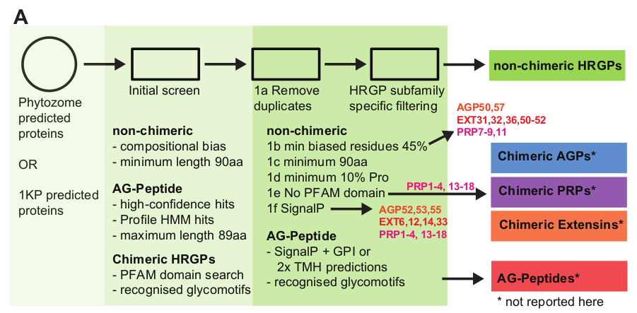
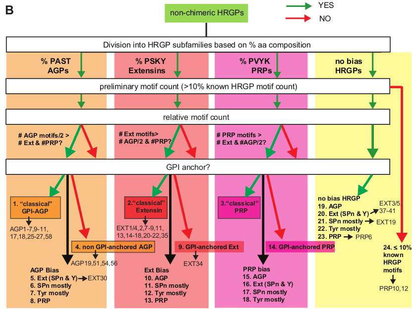

Understanding evolution through big-data RNA-seq processing.
As gene family experts within the OneKP consortium, we were tasked with finding HRGP and GT2 gene family members. Performing this is no easy task with a dataset the sheer size of OneKP: comprising well over 1200 distinct RNA-seq samples from over 1000 plant and algae sampled throughout evolution at key points based on existing literature. HRGP proteins are rich in proline (P) and feature compositionally biased backbones. Typically, they possess an N-terminal ER signal sequence and GPI anchor.
Initial investigations showed that few HRGP family members existed in the proteins predicted from the OneKP consortium, perhaps due to assembly and pipeline thresholds. To address this, we reassembled all available samples (over 1200) with Oases at four large k-mers: 39, 49, 59 and 69 to try to span tandem repeats that are common to this family. These datasets are available for download.
The HRGP family comprises numerous sub-families both with recognised domains (chimeric HRGP) and without (non-chimeric HRGP). Our intention was to investigate non-chimeric HRGPs at this time, with followup studies to investigate the chimeric sub-families. Figure A depicts the basic overview of the MAAB processing pipeline.
The OneKP consortium provides existing datasets of over 1200 species:
Unfortunately neither data uses a large enough K (25) to ensure tandem repeats present in HRGP family are correctly re-constructed with a De-Bruijn graph assembly methods. To address this, we use larger k-mers and a multiple-K assembly methodology. K-mers 39,49,59 and 69 were chosen, all available samples were assembled at each k-mer. Subsequently, predicted proteins were then filtered for indicative HRGP compositional bias and then subject to a hand-crafted decision tree classifier (MAAB) into one of twenty-four predefined HRGP classes. MAAB processing steps are depicted in Figure B.
Our aim in processing of the 1kp data was to identify key subfamilies of the broader HRGP family, many of which are difficult to analyse due to compositional bias (at either nucleotide or amino acid levels):
Our observations of this family and published literature suggest:
We then designed the following multi-stage pipeline to address identification of these family members: and evaluated this pipeline against five species from phytozome.net (Arabidopsis Thaliana, Brachypodium Distyachon, Chlamydomas Reinhardtii, Selaginella Moendorffi and Physcomitrella Patens) with reference to the existing scientific literature. Once we were satisfied that the pipeline could adequately identify known AGP/Extensin/PRP's from the reference species selected from phytozome, we then ran the pipeline over suitable sequences extracted from the oases k=59 ab initio protein predictions, and for comparison, the 1kp SOAPDeNovoTrans k=25 predicted proteins.